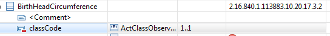
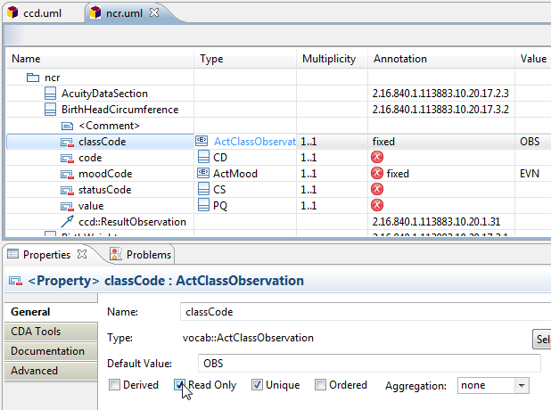

Restrict a structural attribute (classCode, moodCode, typeCode) to
a specified fixed code value.
-
Select the table row for the attribute you want to constrain.

-
In the Properties view General tab, enter a code in the
Default Value field. For example, enter
OBS.
-
Check the
Read Only box.
The
classCode attribute is now constrained to a fixed value of
OBS.
